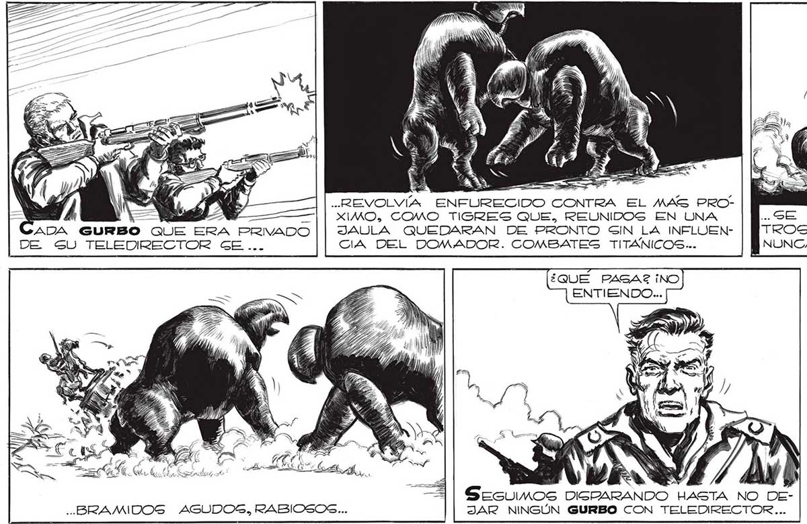
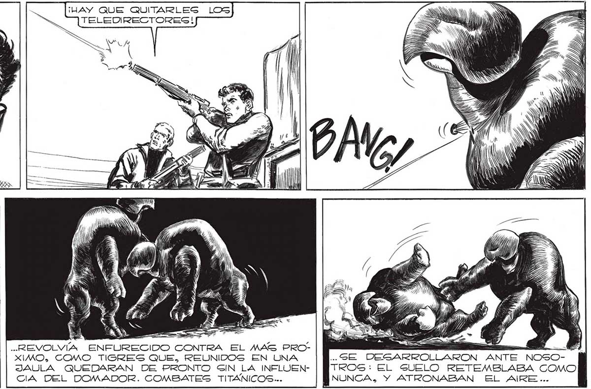

222 ¡RESULTO, SEÑOR ¿SALVO1 EIN EL TELEDIRECTOR LOS "GURBOS SE PELEAN ENTRE <l! AÑ ¡HAY QUE QUITARLESGS LOS TELEDIRECTORESG! -.REVOLVÍA ENFURECIDO CONTRA EL MAS PRO— || xIMO, COMO TIGRES QUE, REUNIDOS EN UNA ADA GURBO QUE ERA PRIVADO || JAULA QUEDARAN DE PRONTO SIN LA INFLUEN65 Su TELESDBRECTOR GE CIA DEL DOMADOR. COMBATES TITÁNICOS... ¿QUE PAGAZ ¡NO AS Sesuimos DIGRARANDO - BRAMIDOS AGUDOS, RABIOSOS... JAR NINGÚN GURBO CON TELEDIRECTOR... HASTA NO DEDi Ñ ES TTÍD t Pp A ES e NÓ «SE DESARROLLARON ANTE NOSOTROS: EL SUELO RETEMBLABA GOMO NUNCA, Y ATRONABAN EL AIRE... FRANCO LO DESCUBRIO... LOs “sURBOS" ERAN MANEJADOS POR MEDIO DE UN TELEDIRECTOR PARECIDO AL DE LOS HOMBRES-ROBOTE...

